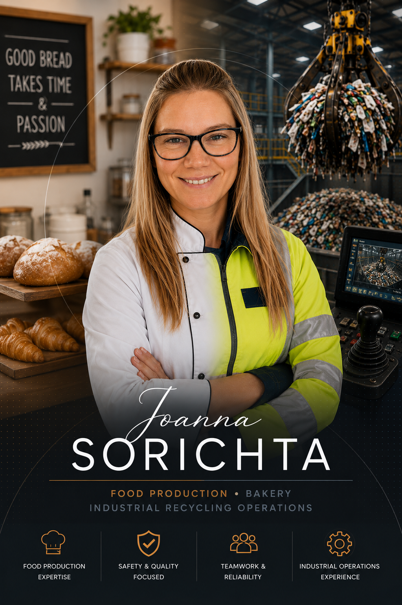

Production & Operations Professional
Multi-skilled professional experienced across bakery production, catering, industrial recycling operations, and machinery-based environments. Strong focus on reliability, teamwork, operational efficiency, and workplace safety.
Experienced working within fast-paced production environments requiring consistency, attention to detail, communication, and strict operational procedures.
Food Production & Bakery
Bakery operations, food preparation, catering support, hygiene standards, quality consistency, and fast-paced kitchen environments.
Core Skills
Professional Experience
Baker — Gail's Bakery
Earlsfield, London | Oct 2023 – Present- Produce baked goods and pastries within a high-volume production bakery environment.
- Maintain product consistency, presentation, and quality standards.
- Follow strict hygiene and food safety procedures.
- Support efficient daily bakery operations within fast-paced shifts.
- Prepare ingredients, doughs, fillings, and bakery products for daily production.
- Maintain clean and organised workstations throughout production shifts.
- Work collaboratively with bakery teams to meet production schedules and deadlines.
Industrial Recycling Operations
Grab crane operations, recycling environments, operational safety, maintenance support, machinery cleaning, and production operations.
Core Skills
Professional Experience
Grab Crane Driver / Multi-Skilled Operative
Cory / ALS Managed Services Ltd | Feb 2017 – Oct 2023- Operated grab crane machinery within industrial recycling operations.
- Supported continuous waste transfer and material processing activities.
- Performed sorting line operations and production support duties.
- Carried out machinery cleaning including OCC screens, rollers, and shafts.
- Followed lockout/tagout procedures during maintenance operations.
- Maintained high health & safety standards within hazardous industrial environments.
- Used handheld radio systems for operational communication.
Open to New Opportunities
Experienced in both food production and industrial operations environments with a strong focus on reliability, teamwork, safety, and consistent performance.